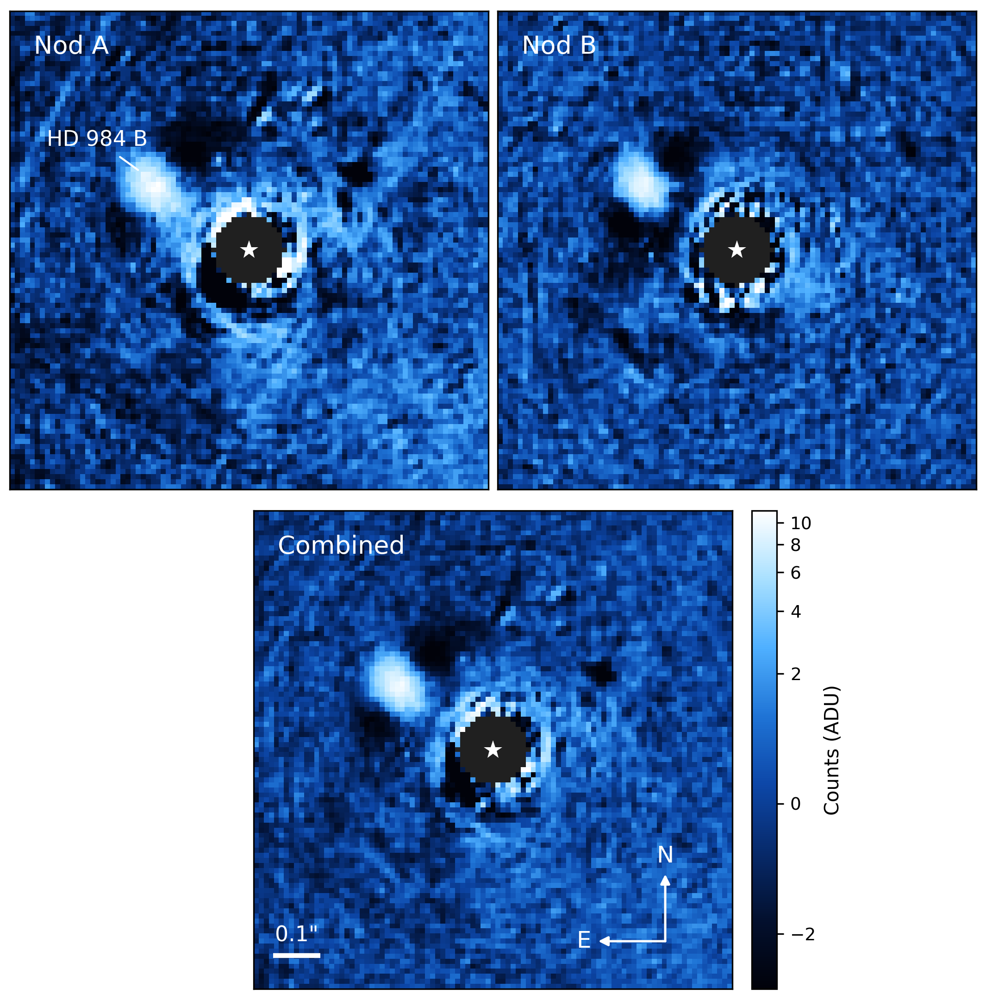

In prep.
01About
I'm a senior at The University of Arizona majoring in Astronomy with a minor in Physics, Computer Science, and Astrobiology. I work with Dr. Kevin Wagner on direct imaging of substellar companions and building exoplanet reduction pipelines with data from the Large Binocular Telescope.
In graduate school, I want to continue research in high-contrast imaging of exoplanets and apply my computer science background to improving post-processing techniques and building tools for future instruments and missions, such as the Habitable Worlds Observatory. My long-term goal, shaped by my minor in Astrobiology, is to help image small, rocky planets and characterize those that may be Earth analogs.
02Research
My primary research has been developing a Python-based exoplanet reduction pipeline using data from the Large Binocular Telescope. The specific system targetted was HD 984 and its substellar companion brown dwarf HD 984 B. Constraining the age, orbital parameters, and mass of this companion help to better understand its formation as well as the formation pathways of other similarly- aged companions.

PSF-subtracted images of HD 984 showing the companion HD 984 B (labeled) to the northeast of the star, from nod position A (left), nod position B (right), and their average (bottom). Credit: Shanks, Wagner et al. 2026
03Posters & Talks
Jan 2026
PosterL-band Imaging of HD 984 with LBTI: New Orbital and Atmospheric Constraints
Aug 2026
TalkRoman Space Telescope WFI Anomaly Detection with Machine Learning
04CV & Education
- 2023–2027B.S. Astronomy, The University of Arizona
Minor in Physics, Computer Science, Astrobiology
Full CV
Last updated Nov 2026
Download CV (PDF)
Last updated Nov 2026
05Contact
The best way to reach me is by email at jeremyshanks@arizona.edu.